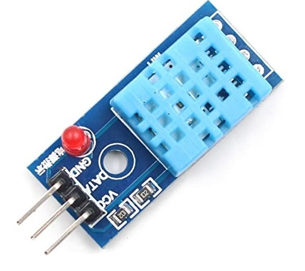
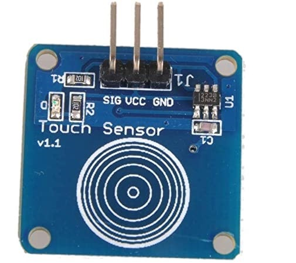

What is Arduino?
Arduino is an open-source hardware and software company, project and user community that designs and manufactures single-board microcontrollers and microcontroller kits for building digital devices.
The Arduino software is easy-to-use for beginners, yet flexible enough for advanced users. It runs on Mac, Windows, and Linux. Teachers and students use it to build low cost scientific instruments, to prove chemistry and physics principles, or to get started with programming and robotics. Designers and architects build interactive prototypes, musicians and artists use it for installations and to experiment with new musical instruments. Makers, of course, use it to build many of the projects exhibited at the Maker Faire, for example. Arduino is a key tool to learn new things. Anyone - children, hobbyists, artists, programmers - can start tinkering just following the step by step instructions of a kit, or sharing ideas online with other members of the Arduino community.
Why Arduino is important?
Arduino is a micro-controller. This small computer is used as the brain of the robot. It can be programmed to control the way buttons, motors, switches, lights, and other electronic parts work together. ... When kids use Arduino at MakerKids, they get to build their own projects.

Why Humidity sensor important?
Humidity sensors are electronic devices that measure and report the moisture and air temperature of the surrounding environment where they are deployed e.g., in air, soil, or confined spaces. Humidity measurements indicate the concentration of water vapor presented in the air.
Learn more

Why touch sensor is important?
A touch sensor detects touch or near proximity without relying on physical contact. Touch sensors are making their way into many applications like mobile phones, remote controls, control panels, etc. Present day touch sensors can replace mechanical buttons and switches.
Learn more